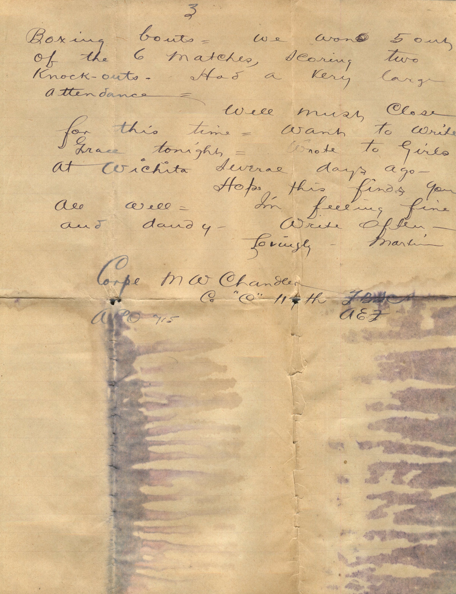
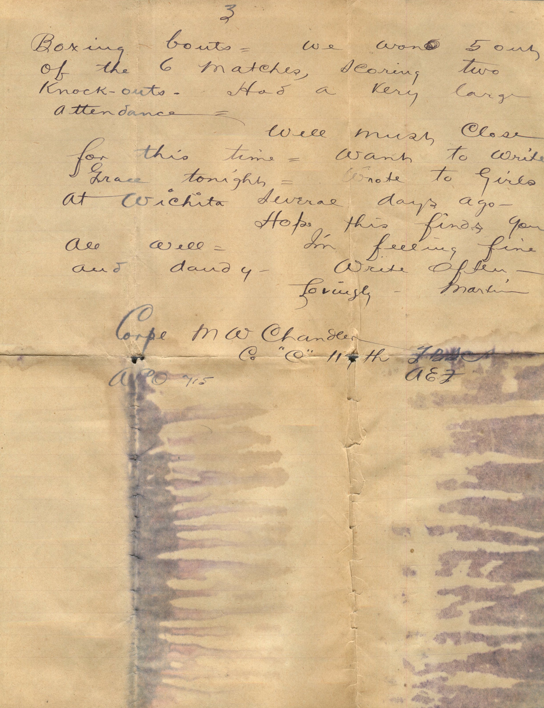

From: Martin Chandler, To: Elijah H. Chandler and Family
 
From: Martin Chandler, To: Elijah H. Chandler and Family Mailed From: Ahrweiler, Germany on January 26
Ahrweiler, Germany Jan 26 Dearest Papa, Mama, and all Received letter from Papa day before yesterday dated Jan. 1st and very glad to get it and to know everybody is well. Was very anxious to know that Mama and Anna had recovered from the attack of influenza. Think I mentioned in a previous letter that I had received a bunch of my back mail including letters from Ruby, Grace, and Lorin. Not very much news to write. Persistent rumors indicate that we will leave next month. Most of the rumors sound very plausible and I'm beginning to put a little faith in them. Certainly would love to get home. I'm still on the same job. Business has been rather heavy last few days. Was notified few days ago that I would attend Liaison School at Coblens but have heard nothing definite about it since so don't know whether or not I'll go. Hope so anyway. The people here are as cordial as ever. They don't seem to be suffering in the least. All the families I've seen so far have had plenty of food. I ate supper with a German family (Place where I room) other night and they had roast pork, something I hadn't tasted for a year. Has been pretty cold last few days. Has snowed several times lately but not heavily. Having quite a bit of entertainment through the Red Cross, K of C and YMCA shoes have been pretty good. The 2nd Canadian Division met the 42nd (Rainbow) Division in an athletic contest short time ago. We won the meet by quite a margin. I attended the boxing bouts. We won 5 out of the 6 matches, scoring two knockouts. Had a very large attendance. Well must close for this time. Want to write to Grace tonight. Wrote to girls at Wichita several days ago. Hope this finds you all well. I'm feeling fine and dandy. Write often. Lovingly, Martin